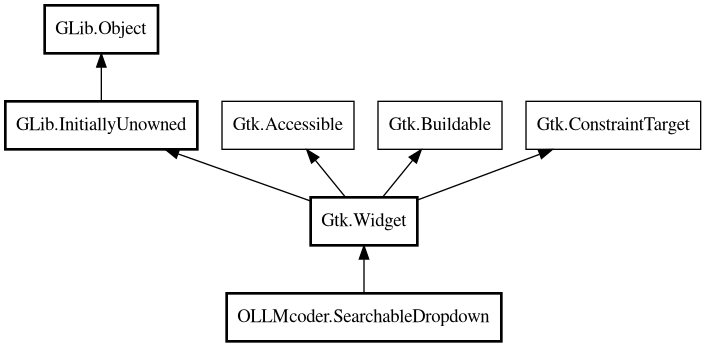

SearchableDropdown
Object Hierarchy:

Description:
public abstract class SearchableDropdown : Widget
Base class for searchable dropdown widgets.
Provides common functionality for searchable dropdowns with text entry and arrow button, similar to Gtk.SuggestionEntry. Follows the
exact pattern from the GTK suggestion entry example.
Content:
Properties:
Creation methods:
Methods:
- protected virtual ListItemFactory create_factory ()
Create the factory for list items.
- public override void dispose ()
- protected int find_in_list (ListModel list, FileBase filebase)
Find a FileBase in a list model by path.
- protected abstract string get_filter_property ()
Get the property name to filter on (e.g., "display_name").
- protected abstract string get_label_property ()
Get the property name to bind for label text (e.g., "path_basename",
"display_name").
- protected abstract string get_tooltip_property ()
Get the property name to bind for tooltip text (e.g., "path",
"tooltip").
- public override bool grab_focus ()
- public override void measure (Orientation orientation, int for_size, out int minimum, out int natural, out int minimum_baseline, out int natural_baseline)
- protected virtual void on_entry_changed ()
Handle entry text changes. Only updates the filter when search text
actually changes. Popup should only be shown when explicitly requested (e.g., clicking arrow). However, if text becomes empty and
popup is visible, hide it.
- protected virtual bool on_key_pressed (uint keyval, uint keycode, ModifierType state)
Handle key press events. Follows GTK suggestion entry pattern from
sample code.
- protected abstract void on_selected ()
Handle when an item is selected in dropdown (via click or Enter key).
- protected virtual void set_item_store (ListStore store)
Set the item store (allows using external store like
project.all_files).
- protected void set_popup_visible (bool visible)
Set popover visibility. Follows GTK suggestion entry pattern: show
popup when typing, hide when selection made.
- protected bool set_selected_item_internal (FileBase? value)
Set selected item by finding it in the filtered model. DISABLED: This
method is disabled to prevent programmatic selection changes that trigger cascading activations. Selection should only be changed by
user interaction.
- public override void size_allocate (int width, int height, int baseline)
- protected virtual void update_arrow ()
Update arrow button visibility.
Fields:
Inherited Members:
All known members inherited from class Gtk.Widget
All known members inherited from class GLib.Object
- @get
- @new
- @ref
- @set
- add_toggle_ref
- add_weak_pointer
- bind_property
- connect
- constructed
- disconnect
- dispose
- dup_data
- dup_qdata
- force_floating
- freeze_notify
- get_class
- get_data
- get_property
- get_qdata
- get_type
- getv
- interface_find_property
- interface_install_property
- interface_list_properties
- is_floating
- new_valist
- new_with_properties
- newv
- notify
- notify_property
- ref_count
- ref_sink
- remove_toggle_ref
- remove_weak_pointer
- replace_data
- replace_qdata
- set_data
- set_data_full
- set_property
- set_qdata
- set_qdata_full
- set_valist
- setv
- steal_data
- steal_qdata
- thaw_notify
- unref
- watch_closure
- weak_ref
- weak_unref
All known members inherited from interface Gtk.Accessible
- accessible_role
- announce
- get_accessible_parent
- get_accessible_role
- get_at_context
- get_bounds
- get_first_accessible_child
- get_next_accessible_sibling
- get_platform_state
- reset_property
- reset_relation
- reset_state
- set_accessible_parent
- update_next_accessible_sibling
- update_property
- update_property_value
- update_relation
- update_relation_value
- update_state
- update_state_value
All known members inherited from interface Gtk.Buildable
- add_child
- custom_finished
- custom_tag_end
- custom_tag_start
- get_buildable_id
- get_id
- get_internal_child
- parser_finished
- set_buildable_property
- set_id